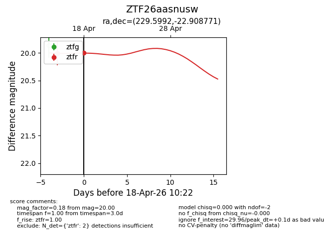
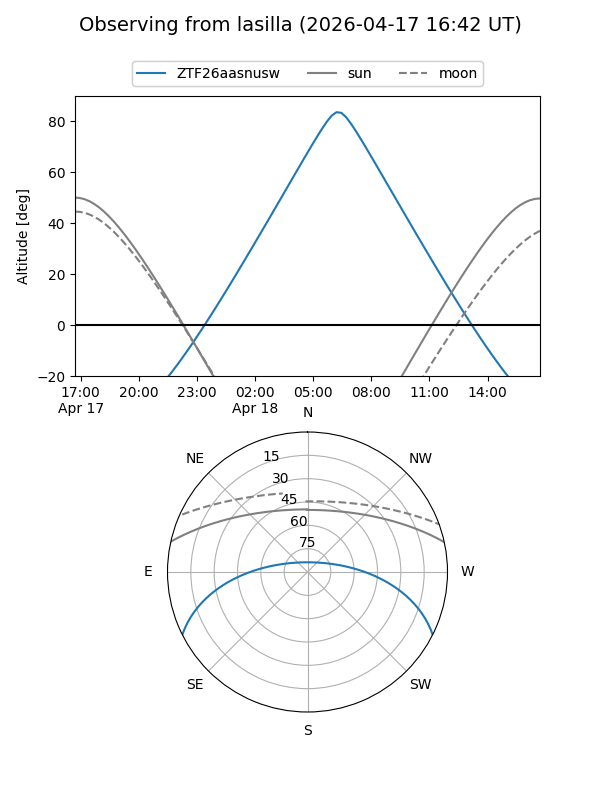
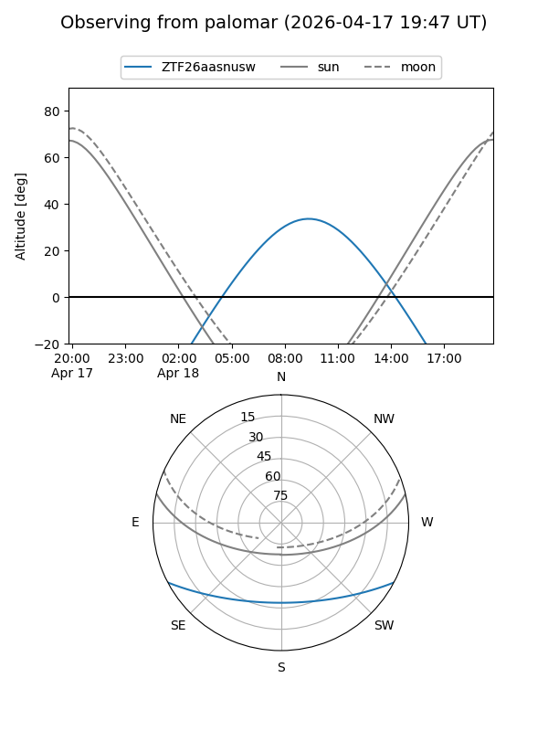
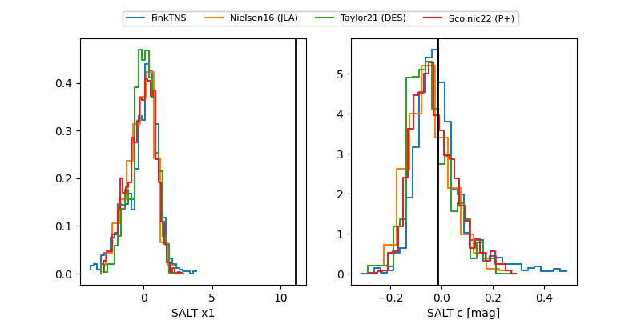

ZTF26aasnusw
Target ZTF26aasnusw at 2026-04-18 10:28
Aliases and brokers:
FINK: link
Lasair: link
ALeRCE: link
alt names
ZTF26aasnusw (ztf,fink_ztf)
Coordinates:
equatorial (ra, dec) = 229.5992,-22.90877
equatorial (HMS+DMS) = 15:18:23.80,-22:54:31.57
galactic (l, b) = (341.8251,+28.64952)
Flags:
Photometry:
last ztfr=20.00
2 ztfr detections
Lightcurve

Visibility


Additional plots
